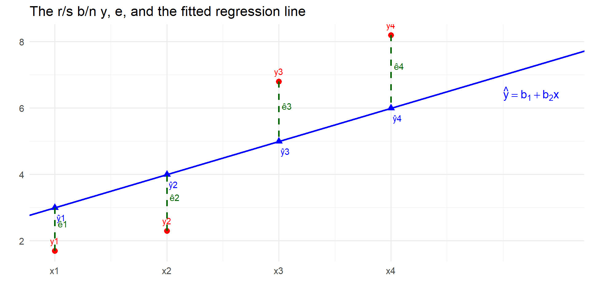

In this chapter, among other things, we learn about:
An Economic model,
An Econometric model & its assumptions,
The least squares estimators,
The Gauss–Markov theorem,
Nonlinear transformations of linear model & indicator variables
An economic model
Economic theory suggests many relationships between economic variables
For example the ;
law of demand
r/s between consumption & income
link b/n education and wages,
effect of advertising on sales,
association b/n experience & productivity,
etc.
An economic model…
A regression model helps us answer a question such as:
If one variable changes in a certain way, by how much will another variable change?
The regression model is based on assumptions
An economic model…
Suppose we want to study the relationship between household income and expenditure on food.
Our “experiment”:
Randomly select households from a specific population (e.g., a city, state, or country).
For now, let’s hold income constant.
Focus on households with a weekly income of $1000.
The Key Variable:
We ask: “How much did you spend per person on food last week?”
Weekly food expenditure per person, denoted as y, is a random variable(RV). Its value is unknown until we sample.
Why is food expenditure a RV?
Even with identical incomes ($1000), food spending varies due to:
Dietary preferences (vegetarian, omnivore)
Household composition (teenagers, seniors)
Lifestyle (frequency of eating out)
Random, impulsive purchase behaviors
Food expenditure …
This variation is described by a Probability Density Function (pdf).
The pdf shows how expenditures are “distributed” across the population
It tells us the probability of different ranges of \(y\) occurring.
The Conditional Distribution?
The pdf of food expenditure y is conditional on the level of income x
We denote this as: \(f(y | x = \$1000)\)
This is read as “the pdf of y given that x equals $1000”
The conditional distribution is the foundation of regression analysis.
We model the behavior of one variable given the values of others.
What do we want to know about this distribution?
From the conditional pdf \(f(y | x = \$1000)\),
we want to estimate two key population parameters:
Conditional Mean:\[μ_y = E(y | x = \$1000) \]
Conditional Variance:\[\sigma_y^2 = \text{var}(y | x = \$1000)\]
What do we want…
The expected value or average food expenditure for all households with $1000 income.This is the center of the conditional probability distribution.
The variance measures the dispersion or spread of expenditures around the mean \(\mu_y\). It quantifies how much variation we expect, even after controlling for income.
The Role of Assumptions: The Normal Distribution
If we knew the parameters \(μ_y\) and \(\sigma^2\), and
if we assume the conditional distribution is Normal,
we could answer precise questions.
Assumption: y | x ~ N(\(μ_y\), \(\sigma^2\))
The Role of Assumptions…
This assumption allows us to calculate probabilities for any interval of y.
Example: We could calculate the proportion of households (with $1000 income) that spend between $50 and $75 per person on food using the properties of the normal distribution.
To investigate the relationship between food expenditure and income,
we build an economic model and
Then an econometric model, also called a regression model.
An econometric model
A household spends \(\$80\) plus \(10\)cents of each dollar of income received on food.
Algebraically, we can write this as: \[
y = 80 + 0.10 x
\] where \(y\) weekly household food expenditure (in \(\$\)) and \(x\) is weekly household income (in \(\$\)) .
In reality, many factors may affect household expenditure on food
An econometric model
Let \(e\)(error term) = everything else affecting food other than income
The above algebraic equation, generally, becomes: \[
y \;=\; \beta_1 + \beta_2 x + e
\]
where \(\beta_1\) (intercept) and \(\beta_2\) (slope) are unknown parameters and \(e\) is a random error.
Let us assume that N samples are randomly selected from the population.
Let \((y_i, x_i)\) denote the ith pair.
The data pair \((y_i, x_i)\) are RVs b/c their values are not known until they are observed.
Each observation pair is statistically different from other pairs
1- Data Generating Process…
All pairs drawn from the same population are assumed to follow the same joint pdf & are identically distributed i.i.d
If the above assumption are true, all data pairs \((y_i, x_i)\) satisfy the r/ship: \(y_i = \beta_1 +\beta_2 x_i +e_i, \ \ \text{where,} i = 1, ..., N\)
This is sometimes called the data generating process (DGP) because we assume that the observable data follow this r/ship.
2. Random Error and Strict Exogeneity
The second assumption of the simple regression model concerns the “everything else” term \(e\).
Unlike food expenditure and income, the random error term \(e_i\) is not observable; it is unobservable.
\(E(e_i|x_i) = 0\) (errors are mean independent of \(x\))
If \(E(e_i|x_i) = 0\), then \(x\) is said to be exogenous
The strict exogeneity assumption has two implications: \(E(e_i) = 0\) & \(\text{cov}(e_i|x_i) = 0\)
2. Random Error and Strict Exogeneity…
If \(\text{cov}(e_i|x_i) \neq 0\), then \(x\) is said to be endogenous
When \(x\) is endogenous, it is more difficult, sometimes much more difficult, to carry out statistical inference
The Regression Function
The conditional expectation \[
E(y_i|x_i) = \beta_1 +\beta_2 x_i
\] is called the regression function.
This says the population average value of the dependent variable for the ith observation, \(y_i\), conditional on \(x_i\) is given by \(\beta_1 +\beta_2 x_i\).
The Regression Function …
This also says given a change in \(x\), \(\Delta x\), the resulting change in \(E(y_i|x_i)\) is is \(\beta_2 \Delta x\) holding all else constant.
we can say that a change in \(x\) leads to, or causes, a change in the expected (population average) value of \(y_i\) given \(x_i\), \(E(y_i|x_i)\), by \(\beta_2\)
3. Random Error Variation
Ideally, the conditional variance of the random error is constant
\(\text{var}(e_i|x_i) = \sigma^2\)
This is the homoskedasticity assumption
3. Random Error Variation…
Assuming the population relationship \[y_i = \beta_1 +\beta_2 x_i + e_i\]
the conditional variance of the dependent variable is:
If this assumption is violated, i.e., \(\text{var}(e_i|x_i) \neq \sigma^2\), then the random errors are said to be heteroskedastic
4- Variation in X
In a regression analysis, one of the objectives is to estimate \(\beta_2 = \Delta E(y_i|x_i)/ \Delta x_i\)
If we are to hope that a sample of data can be used to estimate the effects of changes in x then we must observe some different values of the explanatory variable x in the sample
The minimum number of x-values in a sample of data that will allow us to proceed is two
5. Error Normality
When samples are small, it is advantageous for statistical inferences that the random errors, and dependent variable y, given each x-value, are normally distributed
It is not at all necessary for the random errors to be conditionally normal in order for regression analysis to “work”
5. Error Normality…
Central Limit Theorem, says roughly that collections of many random factors tend toward having a normal distribution.
It is entirely plausible that the random are normally distributed
Generalizing the Exogeneity Assumption
So far we have assumed that the data pairs \((y_i, x_i)\) have been drawn from a random sample & are i.i.d
What happens if the sample values of the explanatory variable are correlated?
And how might happen?
Generalizing the Exogeneity…
A lack of independence occurs naturally when using financial or macroeconomic time-series data
The data series is likely to be correlated across time
The assumption that the pairs \((y_t,x_t)\) represent random iid draws from a probability distribution is not realistic.
Why?
Remember, the random error at time \(t\),\(e_t\), cannot be predicted using any value of the explanatory variable
Error Correlation
It is possible that there are correlations between the random error terms
With cross-sectional data, data collected at one point in time, there may be a lack of statistical independence between random errors for individuals who are spatially connected
Within a larger sample of data, there may be clusters of observations with correlated errors because of the spatial component
Error Correlation…
The starting point in regression analysis is to assume that there is no error correlation,
That is, \(\text{cov}(e_i,e_j|\mathbf{x})=0, \text{for} \ \ i \neq j\)
Assumption \(6\), useful but not required for OLS to “work.”
CLT motivates approximate normality in large samples.
Estimating the regression parameters
rm(list=ls())library(mosaic)### Food expenditure and weekly income (N=40)load(url("http://www.principlesofeconometrics.com/poe5/data/rdata/food.rdata"))head(food, 5)
# Summary statistics (cf. Table 2.1 in slides)summary(food)
food_exp income
Min. :109.7 Min. : 3.69
1st Qu.:200.4 1st Qu.:17.11
Median :264.5 Median :20.03
Mean :283.6 Mean :19.60
3rd Qu.:363.3 3rd Qu.:24.40
Max. :587.7 Max. :33.40
# Scatter plot for the food expenditure examplefood %>%ggplot(ggplot2::aes(x=income, y=food_exp)) +geom_point(col="red") +labs(title ="Food expenditure vs. income")+xlab("x= weekly income in 100 $")+ylab("y= weekly food expenditure in $")+theme_bw()
The Least Squares Principle
To estimate \(\beta_1\) and \(\beta_2\) we want a rule, or formula, that tells us how to make use of the sample observations.
Many rules are possible, but the most common is the least squares principle.
This principle asserts that to fit a line to the data values we should make the sum of the squares of the vertical distances from each point to the line as small as possible.
The Least Squares Principle…

The Least Squares Principle…
The distances are squared to prevent large positive distances from being cancelled by large negative distances.
This rule is arbitrary, but very effective, and is simply one way to describe a line that runs through the middle of the data.
The intercept and slope of this line, the line that best fits the data using the least squares principle, are \(b_1\) and \(b_2\).
\(b_1\) and \(b_2\) are the least square estimates of \(\beta_1\) and \(\beta_2\).
The Least Squares Principle…
The fitted line itself is then: \[
\hat{y}_i = b_1 + b_2 x_i
\]
The vertical distances from each point to the fitted line are the least squares resdiuals.
They are give by: \[
\hat{e}_i = y_i - \hat{y}_i
= y_i-b_1 -b_2x_i
\]
The Least Squares Principle…
Given the sample observations on \(y\) and \(x\), the problem is to find values for the unknown parameters \(b_1\) and \(b2_2\) that make the sum of squared residuals as small as possible.
This is a problem in mathematical optimization.
We choose \((b_1,b_2)\) to minimize the sum of squared residuals (SSR): \[
S(b_1,b_2)= \sum_{i=1}^n \hat{e}_i^2= \sum_{i=1}^n\big(y_i - b_1 - b_2 x_i\big)^2
\]
The Least Squares Principle…
The estimates of \(\beta_1\) and \(\beta_2\) that gives the minimum of the sum of squared residuals are:
\(\text{where}\ \ \ \ \bar{y}= \frac{\sum_{i=1}^ny_i}{N}\) and \(\bar{x}= \frac{\sum_{i=1}^ny_i}{N}\) are the sample means of the observations on \(y\) and \(x\).
This estimators are commonly called the Ordinary Least Squares (OLS) estimators
Estimating the OLS estimator
## Estimating the OLS estimators using the Food Expenditure datahead(food, 3)
#' Estimating the parameters of the simple linear regression modellm(food_exp ~ income, data = food)
Call:
lm(formula = food_exp ~ income, data = food)
Coefficients:
(Intercept) income
83.42 10.21
#' Interpretation: Intercept, when income(x) is equal to zero, the average food #' expenditure is $ 83.42. Income: when income increase by 1 unit ($100), the average food expenditure increase by $ 10.21. Or when income decrease by 1 unit ($100), the average food expenditure decrease by $ 10.21
#' assign regression model to an object called m1m1 <-lm(food_exp~income, data=food)names(m1)
#' Save the coefficients as Values for later useb1 <-coef(m1)[1]b1
(Intercept)
83.416
b2 <-coef(m1)[2]b2
income
10.20964
#' A more general output from the model is given bysummary(m1)
Call:
lm(formula = food_exp ~ income, data = food)
Residuals:
Min 1Q Median 3Q Max
-223.025 -50.816 -6.324 67.879 212.044
Coefficients:
Estimate Std. Error t value Pr(>|t|)
(Intercept) 83.416 43.410 1.922 0.0622 .
income 10.210 2.093 4.877 1.95e-05 ***
---
Signif. codes: 0 '***' 0.001 '**' 0.01 '*' 0.05 '.' 0.1 ' ' 1
Residual standard error: 89.52 on 38 degrees of freedom
Multiple R-squared: 0.385, Adjusted R-squared: 0.3688
F-statistic: 23.79 on 1 and 38 DF, p-value: 1.946e-05
#' Figure 2.8. The fitted regressionplotModel(m1)
#' Manually, base Rplot(food_exp ~ income, data=food, main ="Title here...")abline(m1, col="red", lwd=2)
Calculate the Income elasticity
#' Calculate the Income elasticity at mean values, p. 64income.elast.mean <- b2*mean(food$income)/mean(food$food_exp)income.elast.mean
income
0.7058399
#' Interpretation: When income increase by 1%, food expenditure increase by 0.7%.
Rounding the elasticity to two sig. digits
# Rounding to two sig. digitsround(income.elast.mean, 2)
income
0.71
Calculate the Income elasticity…
#' When income decrease by 1%, food expenditure decrease by: round(income.elast.mean*-1, 2)
income
-0.71
#' When income increase by 10%, food expenditure increase by:round(income.elast.mean*10, 2)
income
7.06
#' When income decrease by 5%, food expenditure decrease by:round(income.elast.mean*-5, 2)
income
-3.53
Calculate the Income elasticity…
#' This creates the Income elasticity (at every observation) as a variableincome.elast <- b2*food$income/food$food_exp#' Note that the Income elasticity calculated at mean x and y values, and the#' average of the Income elasticity at all observations differ a bit.mean(income.elast)
[1] 0.7550135
income.elast.mean
income
0.7058399
Plot the ealstity
plot(income.elast)abline(h=mean(income.elast))
Standard error of income elasticity
#' st.error of elasticity using the delta method (Chapter 5)library(car)mx <-mean(food$income)my <-mean(food$food_exp)deltaMethod(m1, "b2*mx/my", parameterNames=paste("b", 1:2, sep=""))
Given \(\mathbf{x}\), the OLS estimator \(b_2\) is an unbiased estimator of the regression parameter \(\beta_2\).
The OLS estimators…
On the other hand, if \(E(e_i|\mathbf{x}) \neq 0\) and it depends on \(\mathbf{x}\) in some way, then \(b_2\) is baised estimator of \(\beta_2\).
One leading case in which the assumption \(E(e_i|\mathbf{x}) = 0\) fails is due to omitted variables.
Properties of b1 and b2
The property of unbiasedness is about the average values of b1 and b2 if many samples of the same size are drawn from the same population
If we took the averages of estimates from many samples, these averages would approach the true parameter values b1 & b2
Properties of b1 and b2 …
Unbiasedness does not say that an estimate from any one sample is close to the true parameter value, and thus we cannot say that an estimate is unbiased
We can say that the least squares estimation procedure (or the least squares estimator) is unbiased
Sampling variation
The OLS estimators varies from sample to sample because they are random variables.
#' Repeated sampling (mosaic::do) or bootstrappingresample(food)
#' Plot the data first,#' then add each of the MC regression lines, brute force approachplot(food$income, food$food_exp, col="blue", pch=19, main ="Bootstrap parameter variance")for(i in1:length(table$.index)) {curve(table[i,1]+table[i,2]*x, 0, 40, add =TRUE, col='#FF000088')}
The Variances & Covariance of \(b_1\) & \(b_2\)
If the regression model assumptions SR1-SR5 are correct, then the variances and covariance of \(b_1\) and \(b_2\) are:
Points about the Variances & Covariances Of b1 & 𝑏2
The larger the variance term \(\sigma^2\), the greater the uncertainty there is in the statistical model, and the larger the variances and covariance of the least squares estimators.
The larger the sum of squares \(\sum (x_i - \bar{x})^2\), the smaller the variances of the least squares estimators and the more precisely we can estimate the unknown parameters.
The larger the sample size \(N\), the smaller the variances and covariance of the least squares estimators.
Points about the Variances & Covariances Of b1 & 𝑏2…
The larger the term \(\sum x_i^2\), the larger the variance of the least squares estimator \(b_1\).
The absolute magnitude of the covariance increases the larger in magnitude is the sample mean \(\bar{x}\), and the covariance has a sign opposite to that of \(\bar{x}\).
The Gauss–Markov Theorem
Given x and under the assumptions SR1–SR5 of the linear regression model,
the estimators \(b_1\) and \(b_2\) have the smallest variance of all linear and unbiased estimators of \(\beta_1\) and \(\beta_2\).
They are the best linear unbiased estimators (BLUE) of \(\beta_1\) and \(\beta_2\).
Major Points About the Gauss-Markov Theorem
The estimators \(b_1\) and \(b_2\) are “best” when compared to similar estimators, those which are linear and unbiased. The Theorem does not say that \(b_1\) and \(b_2\) are the best of all possible estimators.
The estimators \(b_1\) and \(b_2\) are best within their class because they have the minimum variance. When comparing two linear and unbiased estimators, we always want to use the one with the smaller variance, since that estimation rule gives us the higher probability of obtaining an estimate that is close to the true parameter value.
In order for the Gauss-Markov Theorem to hold, assumptions SR1-SR5 must be true. If any of these assumptions are not true, then \(b_1\) and \(b_2\) are not the best linear unbiased estimators of \(\beta_1\) and \(\beta_2\).
Major Points About …
The Gauss-Markov Theorem does not depend on the assumption of normality (assumption SR6).
In the simple linear regression model, if we want to use a linear and unbiased estimator, then we have to do no more searching. The estimators \(b_1\) and \(b_2\) are the ones to use. This explains why we are studying these estimators and why they are so widely used in research, not only in economics but in all social and physical sciences as well.
The Gauss-Markov theorem applies to the least squares estimators. It does not apply to the least squares estimates from a single sample.
The Pdf of the Least Squares Estimators
If we make the normality assumption (assumption SR6 about the error term), and treat x as given, then the least squares estimators are normally distributed:
A Central Limit Theorem: If assumptions SR1–SR5 hold, and if the sample size N is sufficiently large, then the least squares estimators have a distribution that approximates the normal distributions shown in the previous slide.
Estimating the Variance of the Error term
The variance of the random error \(e_i\) is:
\[
\mathrm{Var}(e_i) = E (\left[e_i-E(e_i|x) \right]^2|x)=\sigma^2
\]
If the assumption \(E(e_i) = 0\) is correct.
Since the “expectation” is an average value, we might consider estimating \(\sigma^2\) as the average of the squared errors.
The standard errors of \(b_1\) and \(b_2\) are measures of the sampling variability of the least squares estimates \(b_1\) and \(b_2\) in repeated samples.
The estimators are random variables.
As such, they have probability distributions, means, and variances.
In particular, if assumption \(SR6\) holds, and the random error terms \(e_i\) are normally distributed, then:
The estimator variance, \(\text{var}(b_2)\), or its square root, which we might call the true standard deviation of \(b_2\), measures the sampling variation of the estimates \(b_2\).
The bigger \(\text{var}(b_2)\) is, the more variation in the least squares estimates \(b_2\) we see from sample to sample.
If \(\text{var}(b_2)\) is large, then the estimates might change a great deal from sample to sample.
Interpreting the Standard Error…
If \(\text{var}(b_2)\) is small relative to the parameter \(b_2\), we know that the least squares estimate will fall near \(b_2\) with high probability.
The question we address with the standard error is ‘‘How much variation about their means do the estimates exhibit from sample to sample?’’
Estimating Nonlinear Relationships
Economic variables are not always related by straight-line relationships,
In fact, many economic relationships are represented by curved lines, and are said to display curvilinear forms.
Fortunately, the simple linear regression model \[y = \beta_1 + \beta_2 x + e\] is much more flexible than it looks at first glance
Estimating Nonlinear …
The variables \(y\) and \(x\) can be transformations, involving logarithms, squares, cubes or reciprocals, of the basic economic variables, or
they can be indicator variables that take only the values zero and one.
Estimating Nonlinear …
Consider the linear model of house prices: \[
Price =\beta_1 +\beta_2 SQFT +e
\] Where SQFT is the square footage
It may be reasonable to assume that larger and more expensive homes have a higher value for an additional square foot of living area than smaller, less expensive, homes
Estimating Nonlinear …
We can build this into our model in two ways:
a quadratic equation, where the explanatory variable is \(\text{SQFT}^2\)
a loglinear equation,where the dependent variable is \(\text{ln(PRICE)}\)
Quadratic Functions
The quadratic function \[
y=\beta_1 +\beta_2x^2
\] is a parabola.
The elasticity, or the percentage change in \(y\) given a \(1\%\) change in \(x\), is:
A quadratic model for house prices includes the squared value of \(\text{SQFT}\), giving:
\[
\text{Price}=\alpha_1 + \alpha_2\text{SQFT}^2+e
\] - The slope is:
\[
\frac{d(\text{Price})}{d(\text{SQFT})}=2\alpha_2\text{SQFT}
\] - If \(\alpha_2>0\), then larger houses will have larger slope, and a larger estimated price per additional square foot.
load(url("http://www.principlesofeconometrics.com/poe5/data/rdata/br.rdata"))br %>%ggplot(aes(x = sqft, y = price)) +geom_point() +geom_smooth(method ="lm", formula = y ~poly(x, 2, raw =TRUE),se=FALSE)+ggtitle("Quadratic Relationship")+xlab("Total square fit, Sqft")+ylab("Slae price, $")+theme_bw()
A Log-Linear Function
The log-linear equation \[ln(y) = a + bx\] has a logarithmic term on the left-hand side of the equation and an untransformed (linear) variable on the right-hand side
Both its slope and elasticity change at each point and are the same sign as \(b\)
A Log-Linear Function
The slope is: \(dy/dx=by\)
The elasticity, the percentage change in \(y\) given a \(1\%\) increase in \(x\), at a point on this curve is:
\(\varepsilon = \text{slope}\frac{x}{y}=bx\)
Using a Log-Linear Model
-Consider again the model for the price of a house as a function of the square footage, but now written in semi-log form:
\[
ln(\text{Price})=\gamma_1 +\gamma_2 SQFT +e
\]
This logarithmic transformation can regularize data that is skewed with a long tail to the right
br %>%ggplot(aes(x = price)) +geom_histogram(bins =30, fill ="black", color ="white")+xlab("Sale price, dollars")
br %>%ggplot(aes(x =log(price))) +geom_histogram(bins =30, fill ="black", color ="white")+xlab("log(price)")
library(ggplot2)library(dplyr)# Fit the log-linear modelfit <-lm(log(price) ~ sqft, data = br)# Add predictions to the original databr <- br %>%mutate(pred_price =exp(predict(fit, newdata = br)))
We should do our best to choose a functional form that is:
consistent with economic theory
fits the data well, and
satisfy the assumptions of the regression model
In real-world problems it is sometimes difficult to achieve all these goals
In applications of econometrics we must simply do the best we can to choose a satisfactory functional form
Regression with Indicator Variables
An indicator variable is a binary variable that takes the values zero or one;
It is used to represent a nonquantitative characteristic, such as gender, race, or location
\[
UTOWN =
\begin{cases}
1 & \text{house is in University Town} \\
0 & \text{house is in Golden Oaks}
\end{cases}
\]
\[
\text{Price}=\beta_1 + \beta_2 UTOWN + e
\] - How d we model this?
Regression with Indicator Variables
When an indicator variable is used in a regression, it is important to write out the regression function for the different values of the indicator variable
\[
E(PRICE) =
\begin{cases}
\beta_1 + \beta_2 & \text{if } UTOWN = 1 \\
\beta_1 & \text{if } UTOWN = 0
\end{cases}
\] - In the simple regression model, an indicator variable on the right-hand side gives us a way to estimate the differences between population means